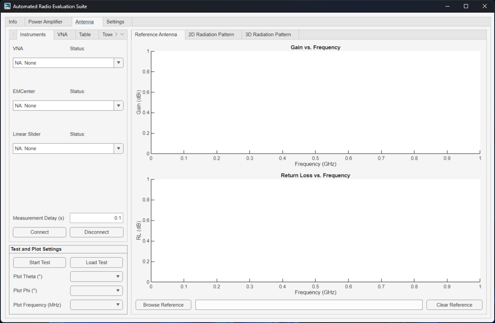
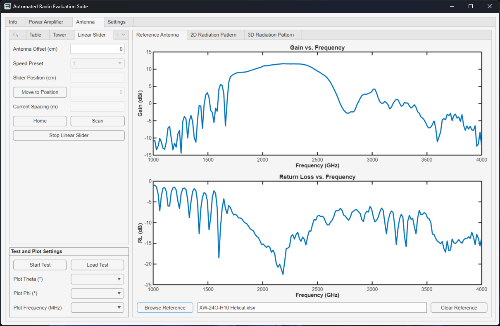
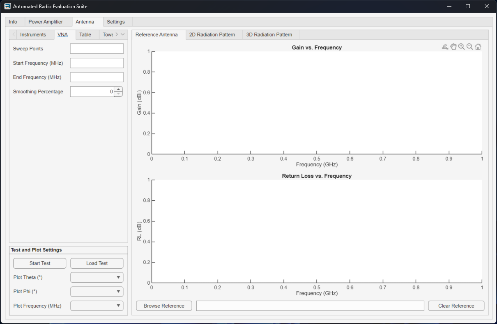
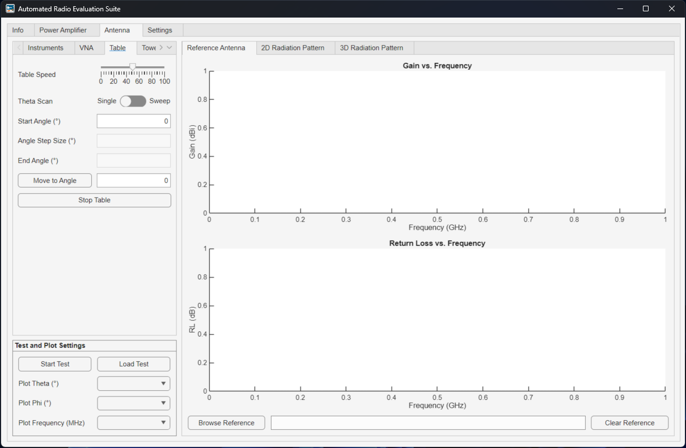
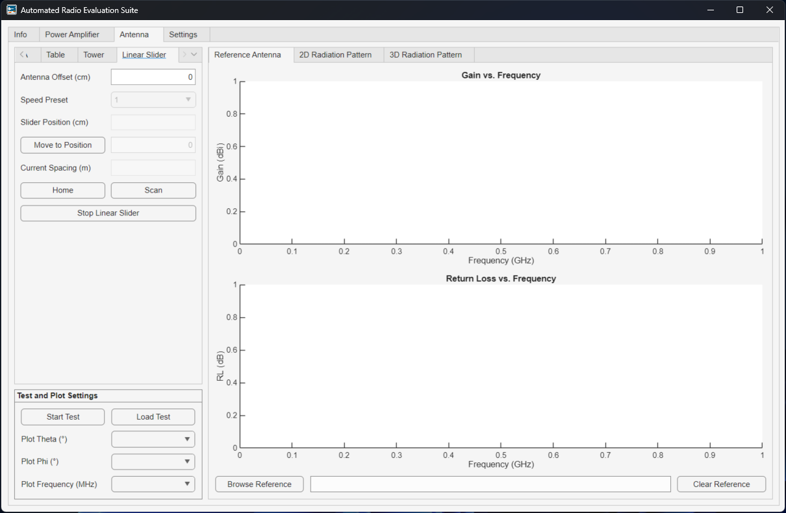
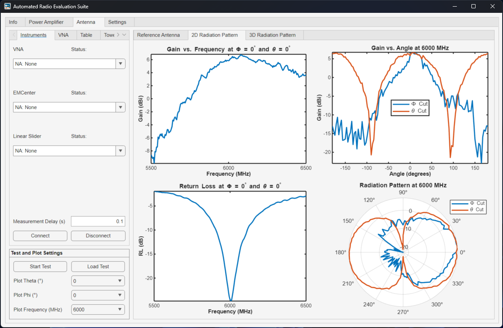
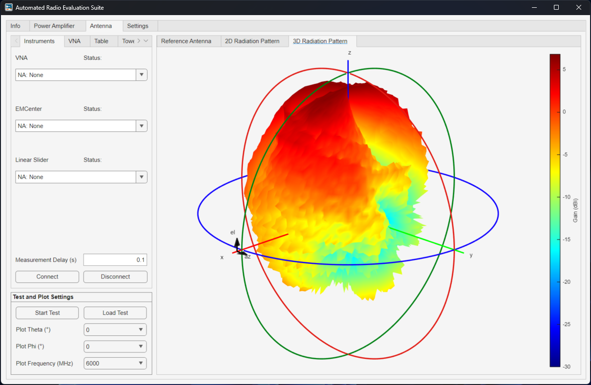

Antenna Tutorial¶
The Antenna module performs parametric measurements varying the position of the DUT and acquires the frequency response. The program will capture the measurements, calculate the gain, save the data, and plot the results. Note the test does not need to be run every time as the data can be loaded into the app. Sample data is available in data/Antenna.
Theory¶
Foundational Equations¶
Friis Transmission Equation:
Where:
\(P_r\): Received power
\(P_t\): Transmitted power
\(G_t\): Transmitter Antenna Gain
\(G_r\): Receiver Antenna Gain
\(\lambda\) Wavelength
\(d\): Distance between transmitter and receiver
Which can be expressed in dB scale as:
The Free Space Path Loss (FSPL) factor is given by:
The ratio of received to transmitted power will be the measured magnitude:
Gain Comparison Method¶
In the gain comparison method (i.e., two antenna method), the reference antenna gain is known. Hence, we can solve Friis transmission equation with this assumption and express it in terms of the measured S-parameters \(S_{21}^{[dB]}\), calculated \(FSPL\), and reference antenna gain \(G_{REF}^{[dBi]}\).
Gain Transfer Method¶
In the gain transfer method (i.e., one antenna method), the DUT and reference antenna are identical (\(G_t^{[dBi]} = G_r^{[dBi]}\)). Hence, we can solve Friis transmission equation with this assumption and express it in terms of the measured S-parameters \(S_{21}^{[dB]}\) and calculated \(FSPL\).
Performing the Measurement¶
Calibration¶
To get started, calibrate the Vector Network Analyzer (VNA) at the measurement plane, where the reference antenna and DUT will be connected. Ensure the frequency range and number of points (or step size) are as desired before caliration. Using an eCal is highly recommended as shown in the demonstration.
Connect to the instruments¶
The first step is to select the relevant instruments in each dropdown of the Instruments tab. Select None: NA for the instruments that will not be used. Read the instrument connection tutorial for detailed information on how to edit the instrument database. Once all the addresses have been populated, click on Connect in the bottom to establish the connection to each instrument and Disconnect to clear all the connections. The Measurement Delay can be modified at any time before the measurement starts. This value is the time to wait between setting all the instruments and before capturing the data.

Load Reference Antenna Data (for Gain Comparison Method)¶
For the Gain Comparison Method, the reference antenna gain needs to be loaded using the same data format for measured antennas. In the Reference Antenna window, click on Browse Reference File and select the data for the reference antenna. Only the boresight gain (\(\theta = 0\), \(\phi = 0\)) is required from the reference antenna. The boresight gain and return loss magnitude over frequency cill be plotted in the results view window. To remove the file, click on Clear Reference.

Configure the VNA¶
Configure the Vector Network Analyzer (VNA) in the VNA tab. When connecting to the instruments, the app will load the current settings to the app. If you change any of the Start Frequency, Step Frequency, and Step Frequency the calibration might not be valid anymore. To prevent this, calibrate before connecting and leave the loaded values. These settings are limited to the capabilites of the instruments (i.e., frequency and power range). In addition, the app can load the smoothened data from the VNA, which utilizes a moving average filter with the given number of samples. If the Smoothing Percentage is set to zero, the smoothing will be turned off.

Configure the table (theta axis)¶
Configure the theta axis in the Table tab. Select between a static or parametric sweep. Select the Table Speed using the slider. Then enter the appropiate Start Angle, Angle Step Size, and Stop Angle. Note the software inputs are between \(-180^\circ\) and \(180^\circ\). Since the table is configured to take angles between \(0^\circ\) and \(360^\circ\), the software will translate to the appropiate values. If the user desired to control the table from the software, enter the target position and click on Move to Angle. To stop the movement at any time, click on Stop Table.

Configure the tower (phi axis)¶
Configure the tower axis in the Tower tab. Select between a static or parametric sweep. Select the Tower Speed using the slider. Then enter the appropiate Start Angle, Angle Step Size, and Stop Angle. Note the software inputs are between \(-180^\circ\) and \(180^\circ\). If the user desired to control the table from the software, enter the target position and click on Move to Angle. To stop the movement at any time, click on Stop Tower.

Configure the linear slider¶
In the Linear Slider tab, set the Antenna Offset, which is adding the lengths of the DUT and reference antenna with respect to the mounting fixtures. The linear slider Speed Preset and Slider Position can be controlled from this tab. To move the slider, enter the target position and clock on Move to Position. The Slider Position will display the current position of the slider while the Current Spacing will display the current antenna separation, which takes into account the slider position and antenna offset. Options to Home, Scan, and Stop the slider are available.

Run the test and plot the results¶
After validating all the settings, click on Start Test to begin the measurement. The progress window will display the time taken and estimated to complete. Once the test is completed, a prompt will open up to save the data. Once you enter the name and save the data, ARES will automatically load the data and plot it. A previous measurement can be plotted by loading the data in the Load Test button.
Important
Measurement Time
Scan \(\theta\) (\(1^{\circ}\) step) with fixed \(\phi\): ~16 minutes
Scan \(\theta\) (\(3^{\circ}\) step) with fixed \(\phi\): ~8 minutes
Scan \(\theta\) (\(5^{\circ}\) step) with fixed \(\phi\): ~6 minutes
3D scan (\(3^{\circ}\) step for both \(\theta\) and \(\phi\)): ~20 hours, ~380 MB for 201 frequency points
The 2D Radiation Pattern results view window will display the realized gain vs. frequency, return loss, and 2D radiation pattern for the selected value of the Frequency, \(\theta\) cut, and \(\phi\) cut dropdowns.

The 3D Radiation Pattern results view window will display the realized gain vs. frequency, return loss, and 2D radiation pattern for the selected value of the Frequency dropdown.
